Este projeto utiliza o Microsoft Azure Language Studio para identificar sentimentos em textos em português.
Aplicar conceitos de IA e NLP (Processamento de Linguagem Natural) para classificar textos como positivos, negativos ou neutros.
Texto 01 → O Sport Club do Recife, um gigante pernambucano, sempre se destaca pela sua paixão e garra em campo, com uma torcida vibrante que empurra o time a cada jogo. O acesso recente à Série A demonstra a força do elenco e a capacidade de superação. Contudo, a equipe precisa melhorar a consistência defensiva e a criação de jogadas no meio-campo. A dependência de alguns jogadores chave pode ser um ponto fraco em caso de desfalques. O desafio agora é manter a estabilidade para consolidar-se na elite do futebol brasileiro.
Texto 02 → Luiz Inácio Lula da Silva, em seus mandatos anteriores, é frequentemente elogiado por programas sociais como o Bolsa Família, que tiraram milhões da pobreza, e por um período de crescimento econômico com inclusão social. Seus críticos, no entanto, apontam para os escândalos de corrupção que ocorreram durante seu governo, como o Mensalão e a Lava Jato, que geraram grande desgaste institucional e questionamentos sobre a ética na política.
Jair Messias Bolsonaro, por sua vez, é visto por seus apoiadores como um defensor da liberdade individual, da pauta conservadora e da redução da burocracia, além de ter buscado uma agenda econômica liberal. Por outro lado, seus detratores criticam sua gestão da pandemia de COVID-19, o desmonte de órgãos de fiscalização ambiental e a retórica polarizadora, que, segundo eles, minou a democracia e a harmonia social.
|
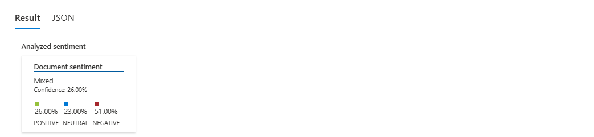
Resultado Final - Texto 01 |
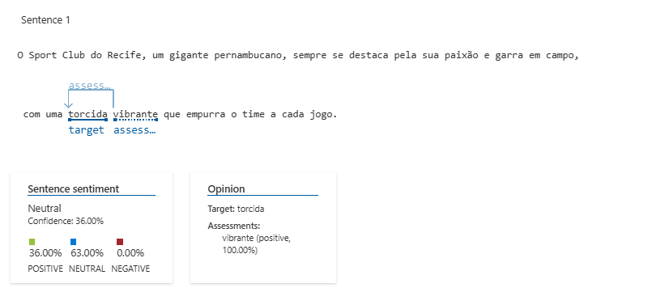
Sentença 01 - Texto 01 |
|
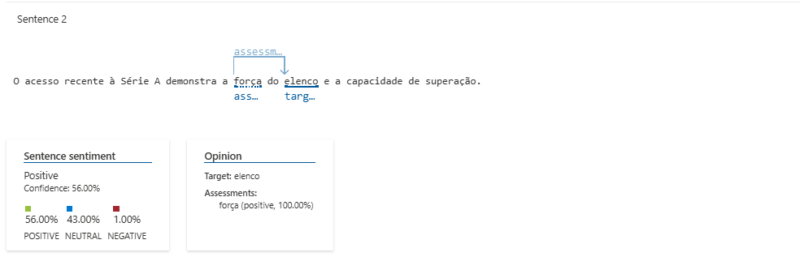
Sentença 02 - Texto 01 |
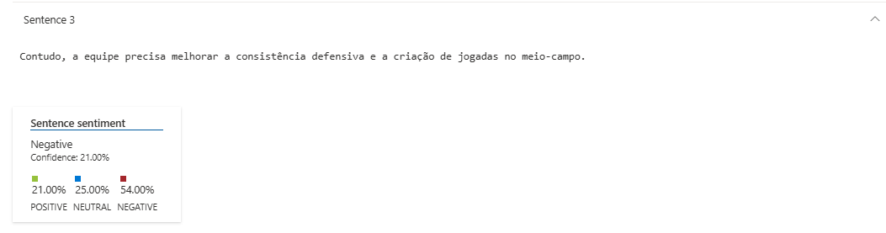
Sentença 03 - Texto 01 |
|
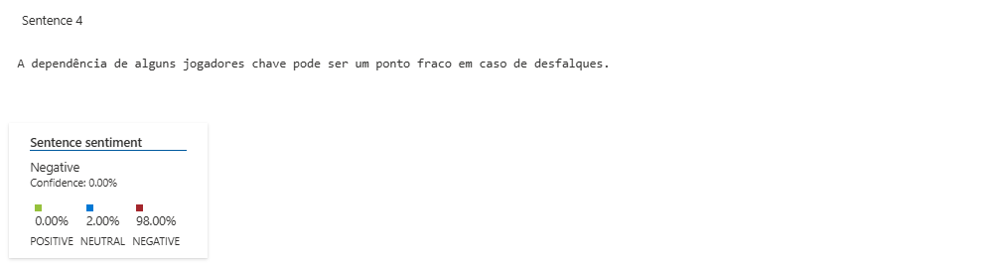
Sentença 04 - Texto 01 |
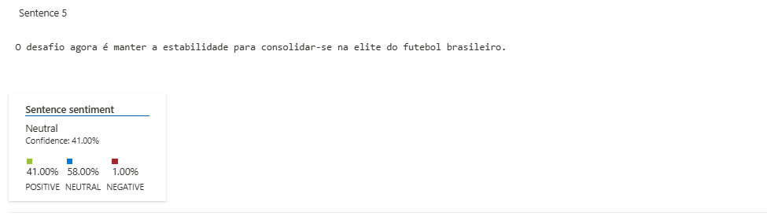
Sentença 05 - Texto 01 |
|
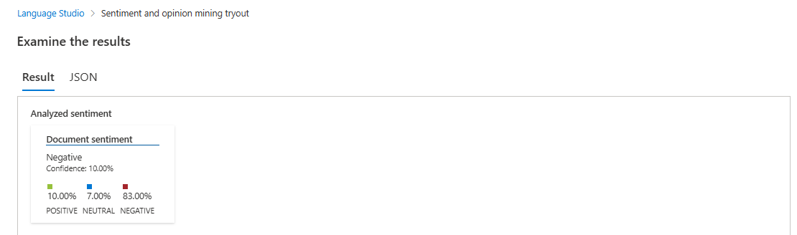
Resultado Final - Texto 02 |
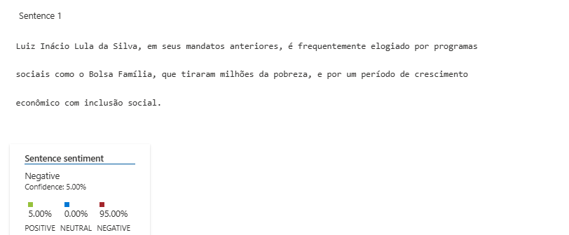
Sentença 01 - Texto 02 |
|
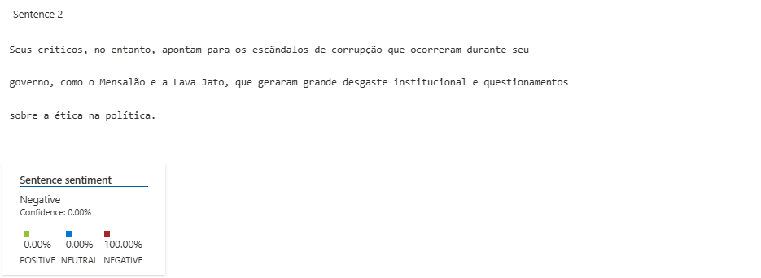
Sentença 02 - Texto 02 |
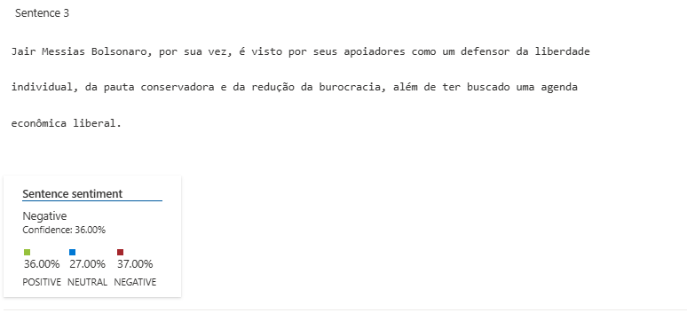
Sentença 03 - Texto 02 |
|
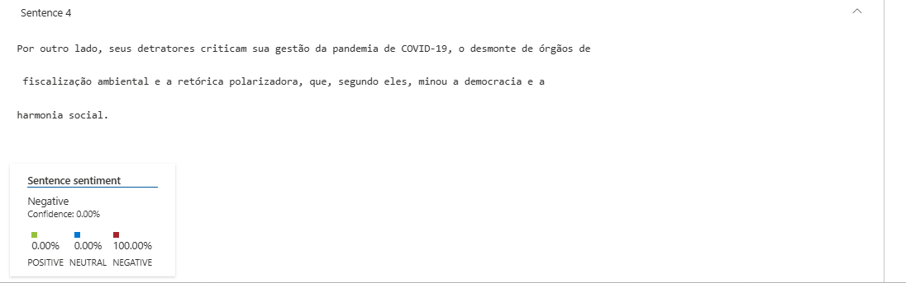
Sentença 04 - Texto 02 |
|